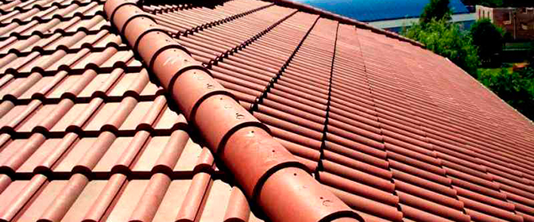

Кровельный материал «металлочерепица» представляет собой покрытие, основой которого является профилированный металлический лист толщиной не менее 0.4 мм, оцинкованный с двух сторон.
На поверхности профилированного листа нанесено защитное полимерное покрытие. В качестве материалов для защитного покрытия используется акрил, пластизоль, ПВФ2, но чаще всего можно встретить листы с покрытием «полиэстр». Эти покрытия определяют внешний вид (блестящее, полуматовое, матовое) и физико-механические характеристики листа (название свое этот материал получил из-за большого сходства его внешнего вида с натуральной черепицей).
Металлочерепица применяется для крыш с уклоном ската, начиная от 15° и до вертикали. На малых уклонах крыши (до 20°) следует особенно тщательно проводить герметизацию стыков кровельных листов.
Монтаж листов прост до примитивности - крути саморезы или шурупы (в зависимости от материала обрешетки под металлочерепицу применяют или саморезы - по металлу, или шурупы - по дереву), да следи за параллельностью укладки листов. Технологический нахлест оговаривает производитель, и его необходимо соблюдать (консультацию всегда можно получить у продавца).
Популярность этого кровельного материала высока - применяется и в малом коттеджном, и в крупном жилищном строительстве.
В частном строительстве жилья этот вид кровельного покрытия используется весьма широко ввиду его невысокой стоимости (затраты на его монтаж в 2 - 3 раза ниже по сравнению с другими видами покрытий) и долговечности. Экономически очень выгодное покрытие.
К тому же, его можно использовать и в качестве отделки плоской крыши, уложив металлочерепицу по периметру крыши с общим уклоном.
Небольшое резюме:
- монтаж - быстро и просто,
- относительно невысокая цена (10 - 15 USD),
- высокие прочностные характеристики,
- небольшой удельный вес,
- высокая несущая способность,
- стабильность цвета в течение длительного срока службы,
- сильная звуковая реакция на механические возмущения (звук падения дождевых капель вызывает резонансные звуковые колебания покрытия),
- относительно высокий процент технологического отхода при монтаже.
Последние 2 характеристики к достоинствам отнести довольно трудно.
Кроме того, следует особо обратить внимание на тот факт, что применять металлочерепицу следует исключительно на скатных крышах с углом ската не менее 15°, т.е. для плоских (квазигоризонтальных) крыш этот вид кровли применять не следует.
Это обусловлено возможным протеканием покрытия в весенне-зимний период вследствие образования наледи на крыше при колебании температуры окружающего воздуха около нулевой отметки. Наледь препятствует сходу талой воды по естественному скату крыши (вода из застойных зон уходит через стыки листов вниз, под кровлю).
Все начинается с технологии изготовления профиля
Металлочерепицу изготавливают («катают») на станках непрерывного действия. Формирующий профиль инструмент имеет уникальное исполнение, в результате профиль кровельного листа получается тоже уникальным (на каждом предприятии свой инструмент и, соответственно, свой профиль).
Поэтому на рынке представлены листы под различными наименованиями - "Элит", "Монтеррей", "Классик" и т.п. Но все предлагаемые виды металлочерепицы сходны в одном - они все копируют натуральную черепицу.
Профиль кровельного листа является основополагающей характеристикой, именно он задает технические требования к подстилающей обрешетке. Шаг ее, в основном, симметричный, но в некоторых случаях необходимо шаг обрешетки выполнять ассиметричным.
Повторяемость профиля легко проверить, состыковав пару листов между собой. Этот дефект относится к разряду скрытых - выявляется после монтажа специфичными полосами, которые видны при рассмотрении крыши под определенным углом зрения.
При выборе материала не лишним будет посмотреть фотографии, показывающие, как будет выглядеть покрытие металлочерепицы с выбираемым профилем.
Цветовая гамма
На рынке сегодня представлены кровельные листы с 30 различными цветовыми оттенками. Выбор цветового решения зависит, прежде всего, от цветовых предпочтений будущих жильцов (именно они чаще всего будут видеть цветовое решение крыши), но при этом следует учитывать некоторые особенности цветовых решений.
Темные оттенки «притягивают» солнечную энергию, поэтому чердачное помещение будет прогреваться очень сильно, естественно, это тепло будет передаваться дальше в помещение. Отсюда повышенная температура и духота в доме, особенно, если вентиляция чердачного помещения выполнена не должным образом.
Светлые оттенки не скрывают загрязнение - на светлых кровельных покрытиях загрязнения заметнее, нежели на темных.
Немного о толщине листа
Практика показывает, что листы с толщиною меньше 0.4 мм недостаточно прочны в местах крепления листов к обрешетке. При таких толщинах появляются местные вмятины, в которых может скапливаться вода (особенно при малых углах скатов). А это, в свою очередь, чревато протеканиями.
Наиболее рациональной считается толщина исходного материала не менее 0.45 мм, но это совершенно не означает, что листы с меньшей толщиной не имеют права на использование - в качестве декоративного покрытия они вполне могут применяться.
Разновидности полимерного покрытия
Непременным условием качественного полимерного покрытия является наличие пассивирующего слоя (это своего рода грунтовка). Этот слой обеспечивает надежное сцепление полимерного покрытия с основным материалом.
Если этот слой отсутствует, такую металлочерепицу лучше не использовать, т.к. полимерное покрытие может через каких-нибудь 3 - 4 года разрушиться. А это изрядные хлопоты - самостоятельно восстановить покрытие в так называемых полевых условиях не удастся. Следовательно, придется менять лист, два или…. Частичная замена вряд ли удастся, т.к. подобрать цветовой оттенок - дело очень сложное, практически невозможное. А замена всего кровельного покрытия - удовольствие не из дешевых, учитывая фактический срок службы покрытия.
Самый превалирующий на рынке материал покрытия - полиэстр. Он характеризуется повышенной стойкостью к атмосферным воздействиям и ультрафиолетовому излучению, но очень чувствителен к чисто механическим повреждениям.
Толщина его всего лишь 25 - 30 микрон, и при неосторожном обращении этот слой легко повреждается, в результате в месте повреждения начинаются интенсивные окислительные процессы. И через несколько лет на листах проявляются ржавые пятна.
Пластизол имеет толщину покрытия порядка 200 микрон, его стойкость выше по сравнению с полиэстром, но он значительно уступает ему в стойкости к ультрафиолетовому излучению, особенно при температуре нагревания свыше 60°С.
Самым стойким покрытием считается «пурал». Диапазон температур его применения позволяет использовать его и в жарких, и в холодных условиях эксплуатации, он стоек к механическим воздействиям, хорошо противостоит ржавчине и не боится загрязнений. Толщина этого покрытия составляет всего лишь 50 микрон.
Особенности монтажа
Начинать монтаж металлочерепицы можно с любой стороны, но при монтаже слева последующий лист следует «заводить» под последнюю волну предыдущего листа.
Свес листа следует выдерживать в пределах 40 - 50 мм.
Первичное закрепление следует производить одним саморезом в верхней зоне, после выравнивания по карнизу и стыковки его с последующим листом можно закладывать следующий лист. Уложив 3 - 5 листов и выровняв их между собой и с единой линией свеса, можно крепить первый лист в полном объеме. Таким же образом следует выполнять монтаж всех остальных листов.
Возможен и другой вариант монтажа - крепление листов к обрешетке проводить после выравнивания нахлестов. Лентой Soudoband следует заклеивать коньковые стыки (особенно на косых коньках). Это предотвратит попадание снега и влаги под покрытие.
Для крепления листов металлочерепицы к обрешетке используются самонарезающие винты SDS 4.8х38 в комплекте с комбинированными уплотнительными шайбами (металлическая и резиновая шайба соединены между собой неразъемным соединением).
Рекомендуемый расход крепежных изделий - не менее 6 штук на 1 квадратный метр покрытия. В специализированных торгующих организациях, как правило, кровельные листы предлагают покупать вместе с комплектом крепежных изделий.
В местах нахлеста листы крепят под каждой канавкой профиля с некоторым смещением точки крепления от центра гребня. В зоне примыкания к карнизу листы крепят по каждому прогибу профиля. В зоне продольного стыка (нахлеста) листы крепят по впадинам волн (без пропусков).
При монтаже используются шуруповерты, обеспечивающие постоянство крутящего момента и, естественно, постоянное усилие закручивания саморезов, а это, в свою очередь, позволит избежать чрезмерной местной деформации листов. Удобство монтажа обеспечивается магнитными головками, надежно удерживающими кровельные саморезы.
Оформление конька крыши осуществляется по двойной доске обрешетки. При монтаже укладывается коньковый уплотнитель. Это исключает попадание снега и дождя в подкровельное пространство. Коньковый элемент крепится по гребням волн профиля кровельных листов саморезами с шагом порядка 300 мм.
Ендова формируется с использованием гладкого листа, который предварительно изгибается на угол схода примыкающих друг к другу скатов и укладывается перед монтажом кровельных листов. В качестве крепежа применяют оцинкованные клямеры.
Желобная планка крепится по верху соседних листов металлочерепицы самосверлящими винтами с шагом порядка 300 мм. Уплотнение для желобной планки не применяют.
Карнизная планка укладывается с перекрытием в 100 мм непосредственно под кровельные листы и крепится шурупами или оцинкованными гвоздями с тем же шагом 300 мм.
Торцевая доска при монтаже должна устанавливаться с учетом высоты гребня профиля кровельного листа, в частности, для металлочерепицы «Монтррей» эта высота составляет 40 мм. При выдерживании всех правил монтажа торцевая планка закрывает торец металлочерепицы, при этом крепится она и в гребни кровельных листов и в боковую доску самосверлящими винтами с шагом порядка 300 мм.
Последовательность операций монтажа торцевой планки следующая:
- крепится спецпланка к обрешетке при помощи клямеров (под кровельный лист);
- укладывается лист металлочерепицы и крепится;
- наклеивается уплотнитель на торцевую планку;
- и последней монтируется торцевая планка.
Монтажные тонкости в зоне выхода дымоходов заключаются в том, что первыми монтируются нижние листы покрытия, далее устанавливаются обе боковые стыковочные планки и одна верхняя. Для этого вида операций используются планки ПВУ 1-го и 2-го исполнений. Стыки герметизируются специальным герметиком.
Боковые планки своими нижними краями должны перекрывать примыкающие листы металлочерепицы. Нижняя планка крепится в последнюю очередь - уже после укладки всех кровельных листов.
Примыкание кровельных листов к стене осуществляется с применением планок ПС-1 и ПС-2. Листы в зоне примыкания к стене укладывают с небольшим зазором между стеной и краем листа (тем самым обеспечивается вентиляционный зазор). Планка ПС-1 своим горизонтальным краем заводится в предварительно прорезанный паз в стене (глубина штробирования паза порядка 2.5 см) и крепится к стене быстромонтируемыми дюбелями. Паз заполняется герметиком. С кровельными листами планка скрепляется при помощи тех же саморезов (также по гребням профиля).
Последними устанавливаются специальные планки - снегоупоры. Устанавливаются они в местах, в которых нежелательны самопроизвольные сходы снега, тем более наледей. Такими местами являются пешеходные подходы, входы в дом и т.п. Крепятся эти упоры теми же саморезами также по гребням волн. Допускается крепить через волну, при этом крепеж необходимо выполнять и по верхнему, и по нижнему отгибам планки.
Металлочерепица в Алматы
Источник: materik-m.ru